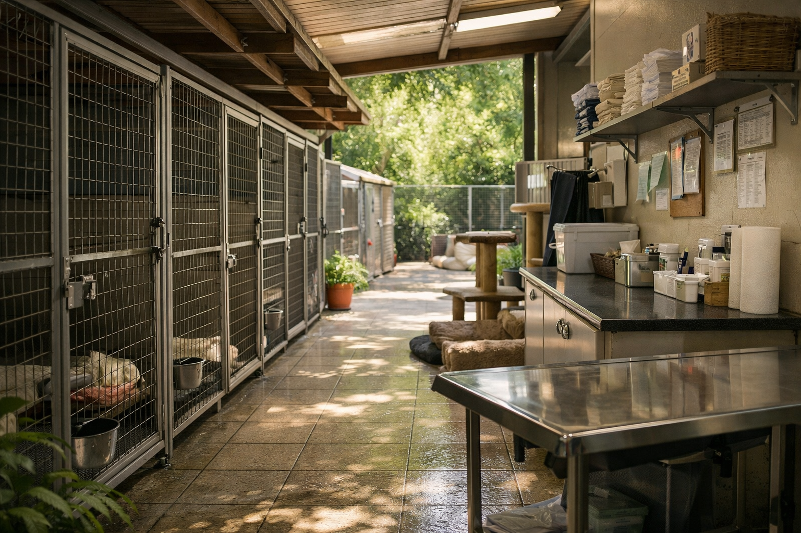

Refugio en Acción
Un taller práctico para conocer de primera mano cómo se gestiona el bienestar diario de los animales y participar activamente en sus cuidados esenciales.

En este taller pasaremos a la acción. Aprenderemos las rutinas de alimentación, higiene y mantenimiento de los espacios, entendiendo que cada pequeño gesto contribuye a la salud y felicidad de los residentes del refugio.
La responsabilidad y el compromiso son los motores que mantienen vivo nuestro refugio.
Conoceremos las dietas específicas de cada especie, los protocolos de limpieza y la importancia de las revisiones preventivas para asegurar una vida digna.
Crearemos juguetes y prepararemos dinámicas que estimulen el comportamiento natural de los animales, reduciendo su estrés y mejorando su calidad de vida.
“Cada acción en el refugio es una oportunidad para dar vida, esperanza y respeto.”
REFUGIO EN ACCIÓN